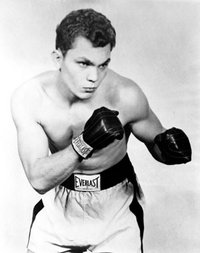
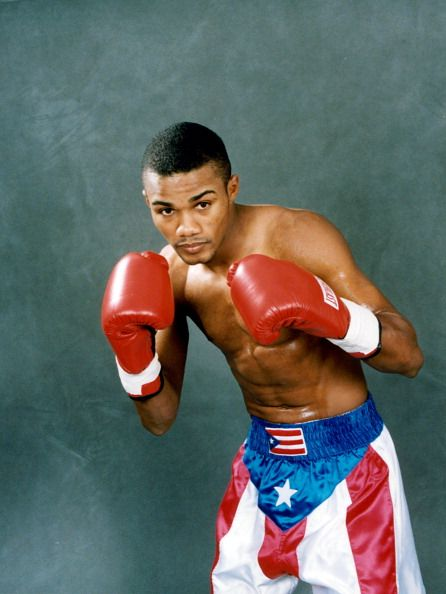
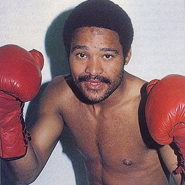
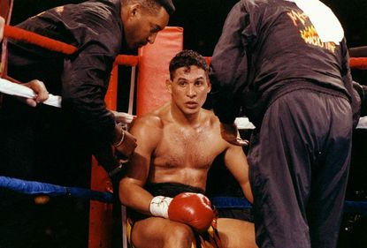

| PUERTORRIQUEÑOS |
INICIO |
MEXICANOS |
ESTADOUNIDENSES |
|  | Nombre: Carlos Ortiz |
| Edad Actual: 83 años | |
| Record Profesional: 61 victorias (30 nocauts), 7 derrotas | |
| Record: 0 | |
| Títulos Mundiales: Dos en peso ligero y uno en peso welter ligero |
|  | Nombre: Félix Juan Trinidad García, |
| Edad Actual: 47 años | |
| Record Profesional: 42 Ganadas (35 Ko), 3 Derrotas (1 Ko), 0 Empates | |
| Record: 0 | |
| Títulos Mundiales: Peso Welter, Mediano ligero,Peso medio |
|  | Nombre: Wilfredo Benítez |
| Edad Actual: 61 años | |
| Record Profesional: 53 Ganadas (31 KOs), 22 por decision, 8 Derrotas, 4 Empates y 4 nocauts | |
| Record: 0 | |
| Títulos Mundiales: Peso Wélter Junior y Campeón mundial Welter del Consejo Mundial de Boxeo (CMB) |
| Nombre: Miguel Cotto | |
| Edad Actual: 39 años | |
| Record Profesional: 41 Ganadas (33 KOs), 6 Derrotas | |
| Record: Se convirtió en el sexto puertorriqueño en ser campeón en tres divisiones diferentes | |
| Títulos Mundiales: Campeon mundial superligero OMB, Campeon mundial peso welter AMB, Campeon mundial peso super welter |
|  | Nombre: Héctor Luis Camacho Matías |
| Edad Actual: Se encuentra muerto | |
| Record Profesional: 88 peleas, ganó 79 (38 por nocaut), perdió 6 (nunca fue noqueado) y empató 3. | |
| Record: 0 | |
| Títulos Mundiales: Campeón Mundial Superpluma del CMB, Campeón Mundial Wélter Jr. de la OMB |